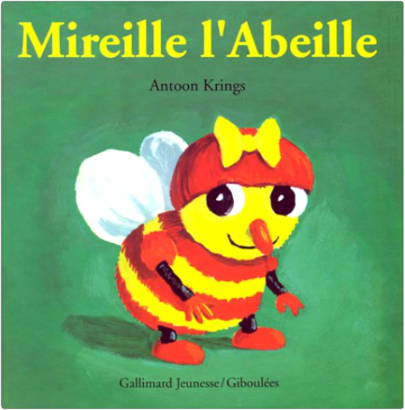

A travers 15 cartes de géographie hautes en couleurs, les enfants découvriront le monde fabuleux des animaux. Grâce à des illustrations détaillés, chaque double-page permet de découvrir les espèces animales des différents pays et continents. DIMENSIONS : 25,5 cm × 32,0 cm × 1,0 cm NB. DE PAGES : 45 pages EDITEUR : NGV EAN : 4007148013028  drôles de petites bêtes, tome 1 : mireille l'abeilleantoon krings Mireille est une abeille consciencieuse... et gourmande. Elle ramasse du pollen chaque matin pour en faire des pots de miel. Jusqu'au jour où elle retrouve ses pots... vides ! Qui a mangé son miel ? Ce livre est le premier titre d'une longue série vendue à plus de 2 millions d'exemplaires en France. La collection consacrée aux Drôles de petites bêtes raconte aux enfants (dès trois ans) la vie d'un jardin imaginaire avec beaucoup d'humour et de poésie. Du même auteur : Siméon le papillon, Oscar le cafard, Luce la puce... —Emmanuelle Figueras |

Julien
Collection Total:
1 944 Items
1 944 Items
Last Updated:
Apr 16, 2022
Apr 16, 2022


 Made with Delicious Library
Made with Delicious Library